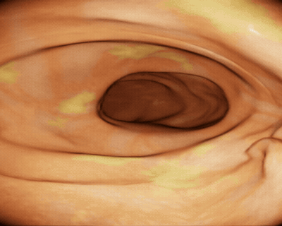
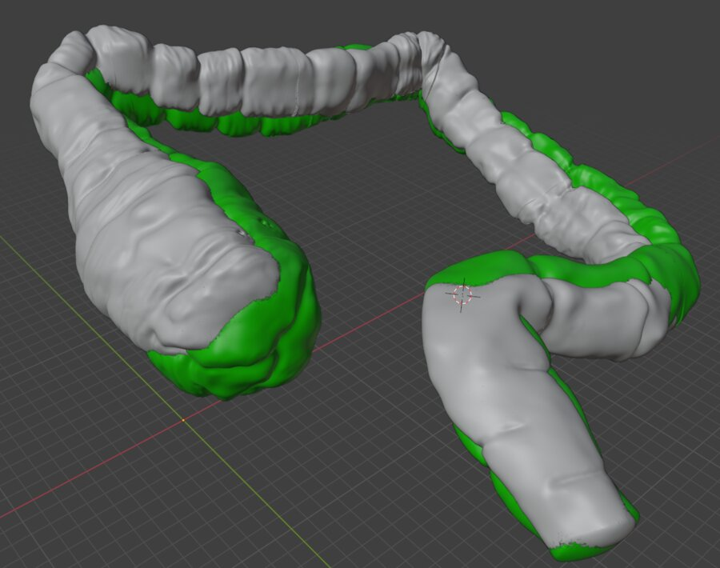
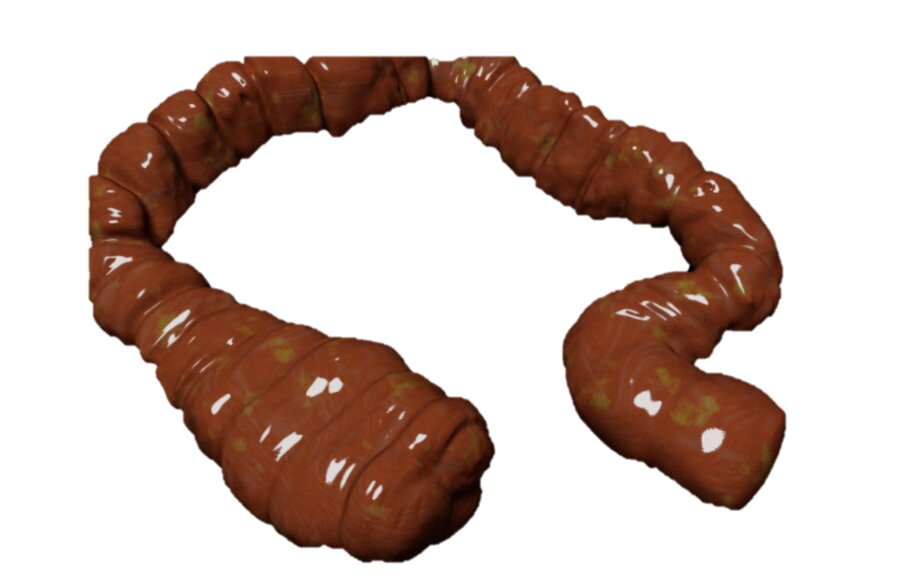
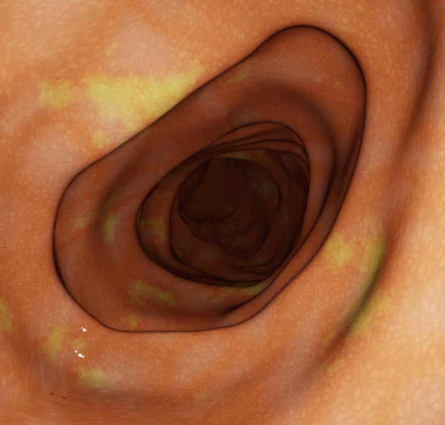
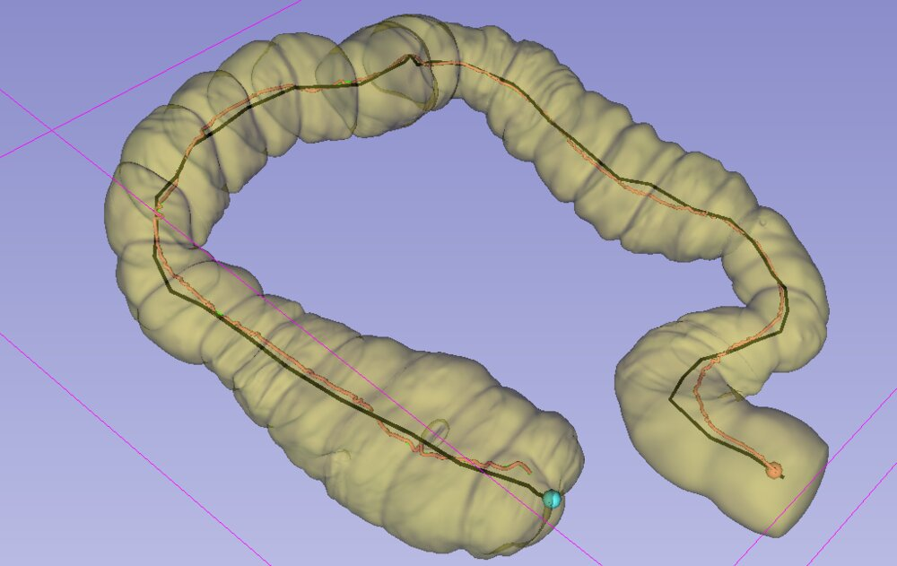
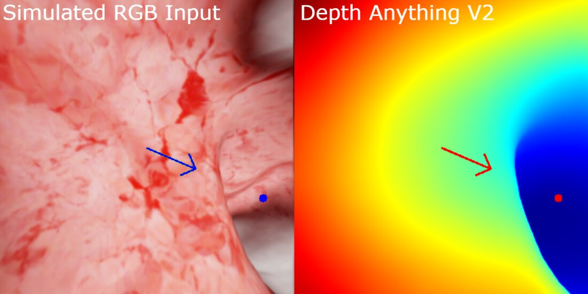
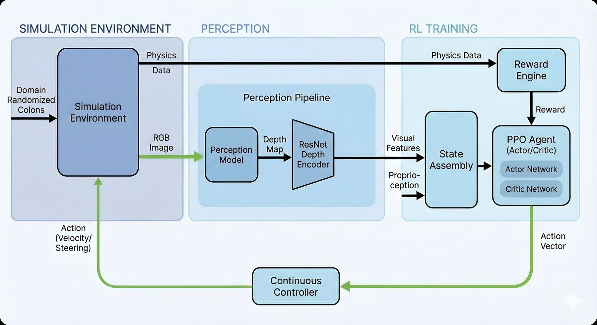
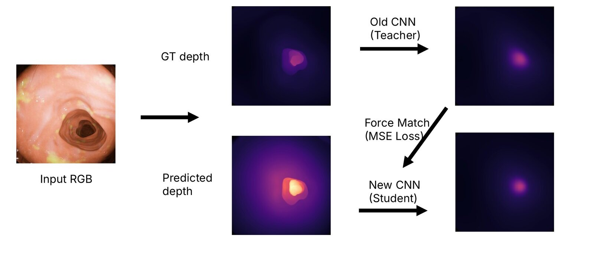

Autonomous Endoscope Navigation
Archie McMurray and team · MRes Medical Robotics and Image-Guided Intervention, Imperial College London · 2025
Four-person group project. My part was the reinforcement learning navigation policy and its integration with the fine-tuned depth model.

Motivation
Colorectal cancer is the second leading cause of cancer death in the UK and worldwide, and colonoscopy is how it is caught early. Steering a scope through a soft, folded colon from a single camera is hard to learn and hard to automate: real datasets are small and come without ground-truth depth, and rigid-body SLAM assumptions break down on deforming tissue. The project aimed to give a soft robotic endoscope depth-aware navigation commands from monocular video alone.
Synthetic colons
Ground-truth colon meshes from C3VD were cleaned and reconstructed in Blender and MeshLab, and centrelines were extracted in 3D Slicer. Noise on the geometry produces endless new lumen shapes, and procedural texture, roughness and normal maps vary the appearance. Rendering these in simulation with varied camera intrinsics, including fisheye, gives paired RGB and depth datasets.




Depth from one camera
Depth Anything V2 was chosen as the base model, as it held up better than alternatives such as Marigold on complex scenes. It was adapted to endoscopy with parameter-efficient fine-tuning rather than full fine-tuning, which avoids overfitting the small dataset. LoRA was compared with ConvPass, an adapter that restores the image grid before applying convolutions and so keeps the spatial structure that vision transformers otherwise discard.

Learning to navigate
A PPO actor-critic in Isaac Lab receives visual features and proprioception and outputs velocity and steering commands to a continuous controller. Rewards favour progress along the colon, staying near the centreline and smooth motion (low jerk). Training ran 32 environments in parallel across five colons, with random start positions and orientations.

Training straight from 392×392 depth maps (153,664 values) was slow, so an autoencoder trained on ground-truth depth compresses each map to 256 features, a 99.8% reduction. That encoder did not transfer to predicted depth, so instead of retraining the policy, a new encoder was distilled to reproduce the old encoder's features from predicted depth.

Results
On a held-out colon the policy reached the end in every run, with smoother motion than earlier work, and kept that performance when the camera intrinsics changed.
| Method | Absolute trajectory error (mm) |
|---|---|
| Ours (depth + RL) | 2.88 |
| CudaSIFT-SLAM | 3.09 |
| HI-PPO (2024) | 8.02 |
| Expert human | 8.03 |
Comparison figures are as reported in the cited work, not on a shared benchmark.
Reflection
Synthetic RGB does not capture real specularities and fluids, so training directly on RGB overfits to simulation artefacts. Driving the policy from depth makes it depend on geometry, which transfers better, at the cost of separating perception from navigation and hiding some real-world visual noise from the policy. The next steps are testing on deformable colons and on a standard benchmark.